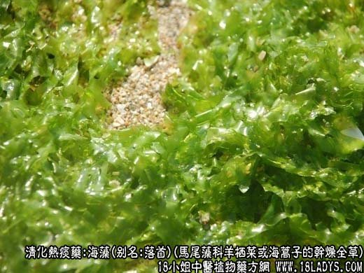
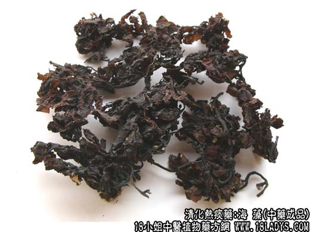
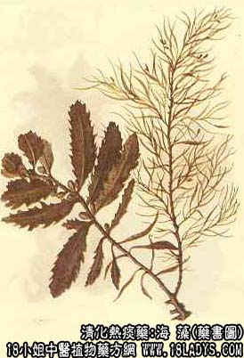

海藻为少常用中药。《神农本草经》列为中品。
别名：落首、海带龙、马尾藻、乌菜。
来源：为褐藻类马尾藻科，多年生海产植物羊栖菜（小叶海藻）或海蒿子（大叶海藻）的干燥全草。
产地：羊栖菜：主产于福建、浙江、广东。海蒿子：主产于山东、辽宁等地。
性状鉴别：1、羊栖菜。全体卷曲皱缩成团状。棕黑色或黑褐色，表面带一层白盐霜。质脆易折断。用水浸软后松散膨胀，肉质，粘滑柔韧，基部固着器纤维状似根。主干圆柱形丛生，直径2～4毫米，长10～40厘米。叶呈线形或棍棒状，长3.5～7厘米，先端盾形，有时膨大，中空成空泡，全缘。生殖托圆柱形或长椭圆形，有柄，丛生于叶腋，气腥、味咸。
2、海蒿子。形态与羊栖菜相似。用水浸软后，主干圆柱形，表面密生短刺突起。有多数分枝，叶形大小差异很大，披针形、倒卵形或线形。长者达25厘米，短者仅2厘米，宽者达2.5厘米，狭者只1毫米。宽叶表面有黑棕色略突起的斑点。边缘多有锯齿。气囊球形或椭圆形，有时顶端具小尖，有短柄，生于最终的分枝上，气味同上。
以上两种均以黑褐色，条长、无杂质者为佳。
主要成分：羊栖菜含碘、褐藻酸、甘露醇等；马尾藻含碘，粘液质，多糖类。
功效与作用：清燥热之痰火、软坚、利尿，作用原理与昆布大致相同。此外还有抗凝血作用；对人型结核杆菌有抗菌作用；对流感病害有抑制作用。
性味：苦、咸、寒。
归经：入肝、肾、胃经。
功能：软坚、消痰、清热利水。
主治：瘿瘤瘰疠，疝气，睾丸肿痛，痰饮水肿。
临床应用：1、治瘿瘤，作用和适应症与昆布相同，方如海藻玉壶汤加减。
2、治慢性颈淋巴结炎，除配入昆布消疠汤外，还可以配大生地或配风栗壳（栗子壳）、屈头鸡（广东中药）等，方如海藻栗壳汤。
3、作保健药用，可与紫菜、海带等轮流煎汤常服，对防治高血压、动脉硬化症属肝阳上亢者，有一定帮助。其作用是否与降压和抗凝血（减少血栓形成的危险）有关，值得进一步研究。
使用注意：昆布、海藻多服一般无大害处，但脾胃虚寒、肾阳衰弱者慎用，高血压病属寒属虚者不宜用。
用量：单用15～30g，一般用9～15g。
处方举例：海藻玉壶汤加减：海藻9g、浙贝9g、连翘6g、昆布9g、法半夏6g、青皮3g、浮海石9g、当归6g、川芎3g、海带9g，水煎服。
海藻栗壳汤：海藻12g、昆布9g、屈头鸡9g、栗子壳6g，水煎服，如能加瘦猪肉共煎汤更好。
注：除以上两种外，还有同科植物海黍子、鼠尾藻和闵粤马尾藻，有些地区也作海藻使用。